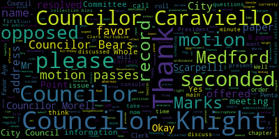
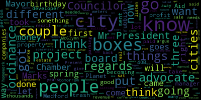
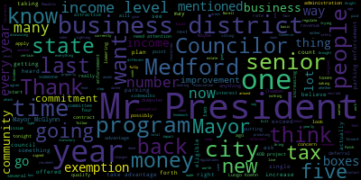
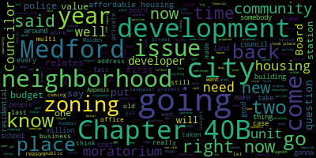

[Falco]: The fourth regular meeting of the Medford City Council will now come to order. Clerk Hurtubise, please call the roll.
[Hurtubise]: Councilor Bears.
[Bears]: Present.
[Hurtubise]: Vice President Caraviello.
[Caraviello]: Present.
[Hurtubise]: Councilor Knight.
[Knight]: Present.
[Hurtubise]: Councilor Marks.
[Marks]: Present.
[Hurtubise]: Councilor Morell.
[Morell]: Present.
[Hurtubise]: Councilor Scarpelli. Present. President Falco.
[Falco]: Present. Seven present. At this time, could everyone please rise to salute the flag.
[WYTf73F7sag_SPEAKER_13]: I pledge allegiance to the flag of the United States of America. Under God, indivisible, with liberty and justice for all. Mr. President, I move to suspend the rules to take a paper out of order.
[Falco]: On the motion of Councilor Knight to suspend the rules to take a paper out of order, seconded by Councilor Caraviello. All those in favor? All those opposed? The motion passes. Councilor Knight.
[Knight]: Mr. President, I move to take paper 2013 out of order. This was a paper that was before the council previously. We sent it back to the mayor with a request for amendment and it has come back as The council amended it. I'd like to ask a representative from the administration to come up and just give us a brief synopsis of the paper that's before us, and then hopefully move for a vote.
[Falco]: Thank you, Councilor Knight. If you could please have a representative from the administration. If you could please have your name and address for the record, please.
[Nunley-Benjamin]: Aleesha Nunley Benjamin, Finance Director for the City of Medford. Good evening, Honorable Councilors. The home rule petition before you is to create a special revenue fund for our casino money which was amended now to be by appropriation by this honorable body.
[Knight]: Mr. President, I do believe, Mr. President, that the special revenue fund was a recommendation that was made by the Division of Local Services from the Department of Revenue to establish generally accepted accounting practices on how to spend the funds that come with these host community agreements and community impact agreements. Based upon the language that's been provided to us and the review of the language that's been provided to us previously, it seems as though everything's in order and the recommendations of the council have been adopted by the administration. As such, I'd move for approval of the paper.
[Falco]: The first reading.
[Knight]: On the motion of- No, no, it's actually a home rule petition, it's going to the legislature.
[Falco]: Excuse me, Councilor, Councilor Knight, can you repeat that, please?
[Knight]: It's a home rule petition, so it will go to the legislature.
[Falco]: Yes. Okay, on the motion of Councilor Knight, seconded by Councilor Scarpelli, Clerk Hurtubise, please call the roll.
[Hurtubise]: Councilor Bears?
[Falco]: Yes.
[Hurtubise]: Vice President Caraviello? Yes. Councilor Knight? Yes. Councilor Marks? Yes. Councilor Morell? Yes. Councilor Scarpelli?
[Falco]: Yes.
[Hurtubise]: President Falco? Yes.
[Falco]: Yes, 7 in the affirmative, 0 in the negative. The motion passes. If I may, really quick, Council Marks. Clerk Hurtubise.
[Hurtubise]: I have the paperwork for you to sign the petition. So I just want you to sign the petition before we, if we can do that before advancing to further business. That's acceptable to council? Yes.
[Marks]: Mr. President, after we've done signing, can we take paper 20-048?
[Knight]: Yes, we can. Second.
[Falco]: If we could please, the clerk will need that back.
[WYTf73F7sag_SPEAKER_13]: Thank you. Thank you.
[Falco]: Okay, while we're under suspension, petitions, presentations, and similar papers, 20-048, petition by Robert M. Penta, Zero Summit Road, Medford, Massachusetts, 02155, to speak on the city's zoning and discuss city's finances. If we could please have your name and address for the record, please.
[Penta]: Good evening, my name is Robert Penta, Zero Summit Road, and a former member of the August body. I come here tonight To make some comments on issues that I feel are important as it relates to this upcoming budget, from what I understand this administration, and I know the Chief of Staff is here, he can reflect upon the fact that you guys and Lady are going to get an early budget this year, earlier than normal. If that's true, I don't know. Is it true? So he says we hope so. With that being said, and with two new Councilors on the board, I would just like to reflect upon a couple of things as it relates to what really has not been addressed for the past few months. First of all, going back to last year at some point in time regarding the Lawrence Memorial Hospital, we never got a report back from the auditor's office as it relates to the outpatient surgical offices that are going to be housed in the old Lawrence Memorial Hospital as part of an addendum to the 16,000 square foot building that the Lawrence Memorial Hospital is going to have their surgical center at. And with that being said, again, it's just out there floating around not knowing what's going to happen because they haven't made a decision. Second of all, it's the taxing of the nonprofit funeral portion of the operation at the Gaffey Funeral Home, which houses the Islamic Cultural Center here in Medford. And where they're going to be running a funeral business out of that center, once again, it presents itself as a for-profit business within the non-profit structure itself. Again, no answers come back on that as of yet. And these are issues that I think need to be discussed and resolved before or at least during your budget. Also, let's go back to something that Councilor Caraviello, when he first came on to the Council, talked about, the disrepair of the schools. At that point in time, Councilor Caraviello indicated during his first term, it was $1.2 million of school repairs. We're now in excess of $1.5 million of school repairs, and we're getting ourselves right into the same position, I shouldn't say ourselves, the city is getting itself into this position of why we had to build new schools in the first place. If the upkeep is not going to be taking place, there is something wrong with that. The building of a new police station, contained within the building of the new police station, it's 5,000 square feet less than what was asked for. There is no police firing range that is for qualification. But more importantly, the sad part about the whole thing, no police vehicle is going to be able to be housed internally. They're all going to be outside. And by doing that, all you're doing is leaving all your public service vehicles open to the elements. So if there's a snowstorm or whatever it might be, every police officer's gonna have to go out there and take the snow off it. And you try to explain that to the people of this community and you tell them that you're spending close to $20 million for a new police station, but you have no place to house or at least care for your police cruisers. A very important issue that seems to be lost in the weeds is the, at present, if not more, a $29 million unfunded pension liability that needs to be paid by 2029. That is yet to be discussed. Also, what needs to be addressed right now also is a citywide It's called the Citywide Home Water Meter Battery Replacement Program. Now for those of you that have a house and you know when you get your water and sewer bill, the system was put in well over 10 years ago with meters that were only good for 10 years. The 10 years have come and gone, that's a cost factor and that's a replacement that needs to take place. We still have yet to receive a cost projection for a new fire station as to where it will be, when it will be, and what it will cost. There is no projections out there. And still outstanding is the new training tower that was promised it would be built before the old one was taken down. Well, the old one has been taken down, and now nothing has been put up. And in fact, it does affect, in the city of Medford, your home insurance rates. There's no financial outline as to how the city's annual free cash should be prioritized. For the new councils coming on board, for the last few many years, it's almost a million dollars each and every year the city of Medford has left over, it just goes into free cash. So that presents itself with one or two arguments. Number one, the budget is either not accurate, or number two, that million dollars is maybe not correct when the budget is being voted upon at the time. So therefore, To me, it makes very good sense because a lot of cities and towns do this. You folks pass a budget in May or June, let's call it June, that should be the time you set your tax rate, not six months later. So if you do that, you're working on an actual annual budget that reflects upon that vote that took place in June that represents itself to each and every dollar itemized. Also, a public works five-year projection program that covers our streets, our sidewalks, our tree stumps, our equipment, our water repairs issues, and cemetery, as well as all personnel that's gonna be needed to address that. That would be a great program to have because number one, we're already understaffed and we're hiring immediately just two more people to work in the highway department that just basically on a daily basis is so understaffed and on demand. Lastly, for the purposes of at least this portion of the discussion, two points. And I know Councilor Caraviello once again has asked for this and Councilor Marks, you've asked for this. You should get a five-year financial recap from Park Medford on all the receipts taken in and what has been given to the City of Medford. I guarantee none of you have received anything from Park Medford as it relates to that financial responsibility. And lastly, Councilor Marks, you brought this up, yet to be determined Where and for what reasons has the $500,000 from Tufts University been accounted for? You still don't know. We still don't know. Now moving over to the housing issue. And here's an issue right now that's in the forefront of everything as to what's going on. So let's just mention a few little things that are going on. Right now what we have on the books are 185 units that are coming online after Wendy's on Middlesex Ave. You have 300 plus units opposite the Wellington Station. You have a proposed 400 Chapter 40B units next to the Middlesex Courthouse on Mystic Valley Parkway. And looking at the smaller neighborhood issue that took place on Forest Street, where a private developer wanted to maximize a single-family residence to a multi-family use zone, that caused a tremendous amount of consultation not only to the neighborhood, but the Medford Historical Commission. Going back, you go to 61 Toro Street, where you had an old magnificent home over there for which Tufts University was involved. And they sort of like wanted to take advantage of the property. But through the neighborhood pushing back, that didn't take place. Right now, as of tomorrow night, you're going to have before the Board of Appeals, where the old Titan gas station is on Boston Avenue and Harvard Street, a condominium proposed development. And then you have rumored development of a new condos behind the Middlesex Avenue Mall. Once again, a rumored development of 30 plus condos on South Street. And a rumored Boston Avenue multi-housing development. Then, at the end of last summer, 500 multi-use development was proposed by Combined Properties of Malden. And after a large community opposition, led by then City Councilor and now Mayor, Lungo-Koehn, as well as Gene Nuzzo and Cheryl Rodriguez, the project was forced to be scrapped by the developer. Now, some six months later, This same company, Combined Properties, is now proposing a 37, 378 residential unit, and the application for approval is coming along under a Chapter 40B proposal, entirely different than what they originally had. The real wake-up call to this whole issue right now on housing here in the City of Medford should have taken place at 61 Locust Street. The massive development that is opposite Wegmans right now, which was originally scheduled for over 500 units, and they've culled it down to 345. Neighborhood protests pushed it back. But as in any big business development, what did they do? They went into the neighbors that were pushing back and they bought every single home over there for them to at least come back with $345,000 and still make the money that they're going to be made. As I said some years ago, and as I said during this past campaign, the City of Medford needs to embark on a moratorium. A moratorium on its zoning, and more importantly, a complete review of its zoning here in the City of Medford. And the reason why the moratorium would work is because our zoning has not been reviewed for a multitude of years. So you're saying to any proposed developer that comes in, I will propose this affordable housing, which is not the same as a Chapter 40B, because remember, affordable housing is something that's compensated in part or given great latitude by state laws, whereas a Chapter 40B is a private independent entity coming in there. So sure, they'll give you their affordable housing. but they'll back in the cost on the remaining units that are in the building. So how does that qualify and justify for an affordable housing process? I don't know. But also, you should be looking into what they call a growth management proposal. And the reason why I say that is because we have right here in our own city, a sister city, it's called Malden, Massachusetts. And in 2015, they put a question on the ballot, and their ballot question revolved around what you have been talking about, Councilor Falco, the Malden Hospital, what we're going to do with it. The second thing is the Community Preservation Act, what are we gonna do with that as far as open space? And their third question was the moratorium on high-density, multi-level development. It won by 71% of the vote, and they had a moratorium, proposal that passed and it went from January of 2016 to December of 2017. Now incorporated into that was the density of the immediate neighborhood taken into consideration, the height, the number of units, as well as the zoning exemptions that were being challenged. And as a result of that, they have now, I think if you go to them all, then you can be able to see, if you look at their development office, I don't know if they call it Office of Community Development, they do have a serious situation where they had developers just coming in all over the place. Medford has a serious problem in having a workable business community, a business development community. Approximately 10.2% of the business in this community is commercial. Who bears the rest of that brunt? It's the residential. And I know every time when you folks turn around and do your budget, you talk about a residential factor making it the highest or the lowest or whatever it might be, you're still putting the burden on the taxpayer who owns his residential home, and you're not taking the exemption for the out-of-state person. So, with that being said, and if we continue to go on this road, or this, how can you say, this road, so to speak, of not increasing our commercial base, all you're going to do is just going to be commercial, I mean, raising in the future your residential rate. Now, after what took place in Malden, and after what took place after that, we can switch ourselves over to the city of,
[Falco]: Mr. Penta, you have one minute remaining. Just want to let you know.
[Penta]: You want somebody else to talk?
[Falco]: No, you have 10 minutes. Your 10 minutes is just about up.
[Penta]: OK, well, I'm on my last page. I'm on my last page.
[Falco]: Yep, no problem. Thank you.
[Penta]: So after Malden, beside Malden, in 2015, the city of Revere, and again in 2018, put that question of a moratorium, high density, multi-use positions over there. And their situation over there revolved itself around large scale buildings, traffic, public safety, schools, and roads were going to be at issue. And the claims that Revere was not growing geographically, but rather becoming more dense without any economic development is just like what's going on right here in our city of Medford. And with that being said, that the challenge for affordable housing in Chapter 40B as we speak today, would be the luxury of using our at-present zoning laws and skirt around the real issue of reasonably priced housing and rental. There are two or three companies in the United States that take into effect low-moderate housing. Veterans middle-income people, but not high-end middle-income people, middle-income people, and that's a determination by a professional. We don't have that expertise over here, and I know on the ballot here tonight, on our agenda, there's a question regarding Chapter 40B, but if you really look at just Chapter 40B, and you realize that developer is not there to lose money, and he's putting housing in a densely populated area, you're violating all the reasoning of why a neighborhood should be a neighborhood. And as a result of that, moratoriums does not have to go on the ballot. A moratorium can be placed by this council, by this mayor, or jointly together. And recognizing the fact, and recognizing the fact, we are a city just as running, allowing housing to be any place and everywhere at any time. And because of that, that's not good. That's not healthy for the neighborhood. As I said before a long time ago, development for the sake of development isn't the best thing that can happen in this city. We have schools, we have public safety, we have public works. We have a whole host of issues that taxpayers have to increasingly pay for. And our best example of that is when they talked about stations landing, that they said at that point in time, that was going to lower our tax rate. Well, the tax rate has never gone down once since station landing. As a matter of fact, it just continuously goes up. I'd be more than happy to answer any questions, but I just think it's important to have brought this up, especially for our two new councils, but more importantly for all seven of you, because this administration and you as a new council needs to address issues that basically address these matters. They haven't been addressed, and they need to be addressed, and you just can't sit here and say, okay, we'll get to it someday, because someday has already come. So with that being said, Mr. President, Larry, could you, I made copies of my comments for all of your Councilors, so in case you missed anything. The part that I appreciated the most when I served on this board for 36 years was the fact that I was willing to hear opposite viewpoints. But when it comes to finances, two and two equals four. And when it comes to neighborhoods, the people who live in the neighborhood should come first. Not out-of-towners, not developers who want to come in there and make a whole bunch of money and then leave us. Perfect example is Lumineer on Locust Street. They built the building. They said they were going to stay there. They went to the Board of Appeals to get what they had to. And one year later, they sold off the building and made $62 million at the expense of the Medford taxpayer. So with that being said, Mr. President, I thank you for listening. And if there's any questions, I'd be more than happy to answer them.
[Falco]: Thank you, Mr. Penta. Any questions from the council? Any questions?
[Penta]: Can I ask a question?
[WYTf73F7sag_SPEAKER_13]: That guy there looks like Ted Cruz. He's got a new addition.
[Falco]: Thank you, Mr. Penta. If we could please have your name and address for the record, please.
[John Storella]: Yes, thank you, Mr. President. My name is John Starella, and I reside on Metcalfe Street here in Medford. I just want to give you my idea of what Councilor Penta referred to free cash. And I want to give you my idea of what free cash is, and I'd like to know whether or not you agree with me. I see free cash as a slush fund. I mean, when we pass, say, for instance, an expenditure, we always overestimate it. And that's done intentionally, because what is left over from the overestimate is put into free cash. And that sits there. And when... the council or any councilor needs a special project, we pay for it out of free cash. And it passes easily because it's free. What do you think of that, Mr. President?
[Falco]: What do you think of that? I think the name is horrible that they call it free cash. Nothing's free. I mean, I disagree with the name of it, without a doubt.
[John Storella]: But is that the purpose of free cash, to have a slush fund?
[Falco]: I wouldn't think so, no. So.
[John Storella]: Well, that's where you get your money when you have a project later on in the term. You can take it right out of free cash and no one objects to it because it's free. Quote, unquote. Thank you.
[Falco]: Thank you, Mr. President. Thank you. Any other questions? Okay.
[Knight]: restricted available funds used to supplement the budget. By definition that's what it is.
[Falco]: Correct.
[Knight]: Motion to receive and place on file.
[Falco]: On the motion of council tonight, seconded by councilor Scarpelli to receive and place on file. All those in favor? All those opposed? The paper is received and placed on file. Motion to console Scarpelli to revert to the regular order of business second by console beers all those in favor all those opposed the motion passes to 0-0 for to offer by console morale whereas the city city of Medford currently Exercises the local option for tax deferments in accordance with Mass General Law chapter 59 chapter 5 paragraph 41 A and whereas the upper income limit set by the city of Medford for eligible residents 65 and over is $20,000 per year. Be it resolved that the Medford City Council discuss raising the income limit to better reflect the cost of living and housing in Medford. Councilor Morell.
[Morell]: Thank you, Mr. President. So I do apologize. So the current minimum for Medford is actually $40,000. In a last session, this body Adjusted the interest rate and also at some point that cap was adjusted I found some pages on the website that need to be updated with the current cap But even at that level of $40,000 for the income cap Medford still lags behind surrounding cities in this state program So for people that don't know this is a state program that Medford takes part in that allows residents who meet certain criteria And are over the age of 65 to defer their property taxes until their house is sold or they pass away Medford like every other municipality has to set an income cap on this and an interest rate as I said The interest rate was lower to 5% last session and I think the members of this body who helped to pass that But in regards to the income cap at $40,000 For context Somerville's limit is 57,000 Cambridge is 53,000 and it should be noted that both of these communities have owner occupied exemptions, which we do not have in Medford, so I As far as kind of tools in our tools box to help people who need it to get relief from their property taxes were really limited. So I think it's important that we make sure we're at the highest level allowed by the state so that as many people who do wish to take part in this program can. I think I check with the chief assessor the city assessor. Believe only two households currently take part in the program. So I understand it's not for everyone with the interest rates and the way the interest rate actually Changes at the time of the owner passing away or being sold But the state does allow us to raise this cap to the senior circuit breaker tax credit And I do understand that other communities rather than having to come back to this income cap time and again They're wording it such that this program is in their city is for people who meet the requirements with income not exceeding the state cap calculated under Clause 41A of Section 5 of Chapter 59. So that's something that as the state adjusts, Medford would adjust along with it. So I'm raising this now and my motion is to send this to Committee of the Whole in either February or March so it's something that we can have the city assessor come out and explain to us how this program, if more people were to take part in this at this higher income cap or other potential caps, how it would just affect cash flow so that we can look at that during budget time as we have these, Meetings hopefully earlier, as we discussed already in this meeting, and I'd also like to add a beat paper so that when that rate is set, this does go up as a notice in the next property tax bill. The deadline to apply for this program is April 1st, so it would be hard for this. We can't do it this time around, but knowing when this rate is set. just so people are aware of this program because it is a program from the state that people around the state take part in. And I want to make sure that Medford residents do know about it. So thank you.
[Falco]: If you could, um, if you could just help with the clerk, if you could give him the wording to the B paper. Yep.
[Morell]: Um, so when this, when we set or Whether we stay with the current cap, if we pick a new cap, whatever it is, after we have this committee of the whole, that we include a notice of this program the next time property tax bills are sent out.
[Falco]: Thank you. Would you like to make a comment? Name and address for the record, please.
[Navarre]: Yeah, William Navarre, Apartment 1B, Medford Street. Sorry, 108 Medford Street, Apartment 1B. I wanted to speak a little bit about this and how it relates to the philosophy of taxation. I wanted to say that land is opportunity and taxes on land are therefore taxes on opportunity. But unlike most taxes, which are only paid when the opportunity is exploited, taxes on land are paid whether the opportunities are squandered or exploited. Taxes on land, therefore, discourage folks buying up land in order to charge a high price to future folks wanting to access the opportunities available on it. Real estate taxes are the only tax I know of in the Commonwealth that tax land at all, and they are therefore the best type of tax collected in this Commonwealth. But those who support taxes on land have, for over 100 years, been thought to be on a mission to tax elderly widows out of their homes. In 1909, Winston Churchill had already heard it a million times. You might not be aware that Winston Churchill supported the form of taxation I've been advocating to you guys. He said then that the personality of the widow has been used to exhaustion. It would be sweating in the cruelest sense of the word, over time of the grossest description, to bring the widow out again so soon. She must have a rest for a bit. Therefore, since I'm advocating for that form of text, I feel this is a really good opportunity to rise in support of the deferral programs in the strongest possible terms and support increasing its income limits. This proposal will allow our seniors to age in place and enjoy their homes if that's what they choose, not tax widows out of their homes. And this I should make very clear I understand is not a handout of any kind to our seniors. It is not even a social safety net or a form of charity. Seniors are still well incentivized to downsize their land use if they wish to leave a larger estate to their heirs. The tax deferrals merely give seniors more flexibility on how to use the assets that they have worked hard to build up over the years by paying their taxes deferred with their property. I hope the seniors who are able to remain in our community under the deferment program will remain allies in my calls for more intensive land use that will provide access to urban opportunities for people of all ages as our city grows. I hope they'll support my calls for higher taxes on land and lower taxes on buildings, and that they'll support my calls for fewer parking mandates. I want to reiterate, in the strongest possible terms, that I support tax deferral programs and I do not hope for increased land taxes or real estate taxes to tax anyone out of their homes. Thank you.
[Falco]: Thank you. Councilor Bears.
[Bears]: Thank you, Mr. President. I don't know, possible and also making sure that with only two households using this, I mean, that might be that people don't want to. My people be that people don't know that the cap was raised to 40,000 recently. I think there's a lot of information questions there. So I just strongly support this motion and the B paper.
[Falco]: Thank you, Councilor Bears. Councilor Knight.
[Knight]: Mr. President, thank you very much. Last term when this council did adopt the increase from $20,000 to $40,000, which passed unanimously before the body, we raised a question to the city assessor asking her to conduct a cost analysis and feasibility study of adopting the state maximum. She reported back to us, I believe, right around the time we were setting the tax rate. that she was still working on that document. So I'd just like to add the paper that the council had adopted back in March of 2019, I'm sorry, May of 2019, I believe it was either the 20th or the 28th in that meeting, making that request. And add that to the agenda as part of the discussion, Mr. President, because if we're going to make a decision about this type of issue that's going to have a certain impact on our finances here in the community, then at the very least we need to have a feasibility study or a cost impact analysis done so that we have an understanding of what impact it's going to have on the bottom line in the community.
[Falco]: Correct. Thank you, Councilor Knight.
[Knight]: So my motion would be to join that paper.
[Falco]: Thank you, Councilor Knight. You want to join?
[Knight]: To include it as part of the meeting. It doesn't necessarily have to be joined to this paper tonight, but when the meeting is conducted, that it's conducted when we have the cost analysis and feasibility study.
[Falco]: Yes, okay. Thank you very much. Councilor Marks.
[Marks]: Thank you Mr. President. I want to thank Councilor Morell for bringing this up. I remember last year's discussions and at the time I believe it was two or three people that took advantage of the tax deferral program. And at the time when we were discussing of raising the income levels and also lowering the interest rate, we thought by taking a step by lowering it from 8% to 5%, we'd see if we attracted more people. Was that more attractive to people that possibly wanted to do a deferral? And I think it's too soon to tell now, but over the next several months, We should see if that was somewhat successful. And I agree the next logical step is increasing the income levels. So I agree with that. I also want to put out there that this is one of several programs that seniors could take advantage of. The other program that we have is the state circuit breaker tax credit program. And that's been around for a number of years. It's 100% through the state. So it's not a city run program. And based on how it works is when your tax bill exceeds 10% of your total income, you qualify. So it's 10% of your total income, you qualify this for this particular program. And for the tax year 2019, the amount that you would qualify for is $1,130. So if any senior out there, is interested, you have to apply for it when you do your taxes, which are coming up. This is an ideal time to do it. And that's when you would apply for this through the state. And you would have to follow their rules and regulations. But that more or less is, in a nutshell, how do you apply for it and who's eligible. The other one is the regular statutory exemptions that we have currently in this city right now for, I believe, veterans, disabled, the blind, and also seniors. And there may be another one. I think there may be five or six exemptions. And the one that I'm speaking about, Mr. President, this council back many years ago, through my resolution, lowered the age from 70 to 65, which actually helped thousands of people take advantage of it, that five-year gap. And that's something I'm proud of that we did many, many years ago to help seniors in this community. But the senior exemption, Mr. President, and this is something we have to look up. It's set up statutorily. So we can't raise the income levels, but we can ask our state delegation, which we ask a lot of things, if they would look at it on a state level, Mr. President, because depending on where you live, in Massachusetts, these income levels are way out of whack. So for instance, your income to be eligible for the senior statutory property tax exemption is not to exceed $24,758 if you're single or $37,137 if you're married. So those are the two income levels that you can't exceed to be currently eligible for a $1,000 exemption in the city of Medford. The one nice thing about this program is we get paid for a portion of what we give in exemption back by the state through our cherry sheets. So we actually get something in back. So actually, we should be promoting this for our seniors. They're getting $1,000, and we're also getting somewhat reimbursed. So we're not fully losing out the $1,000 on our tax roll. So it's a win-win for the resident and also for the city, Mr. President. And also, there's the income level I just mentioned. And regarding estates, you cannot exceed, if you're single, $40,000 in estate revenue or worth and $55,000 for married. And this does not count your domicile. So it does not count where you live. So if you have other assets and so forth that are above the $40,000 for single and $55,000, that's also another criteria. But this program, I believe hundreds of Medford residents, I can't remember the last count, take advantage of this program every year, Mr. President, and count on it because of the way taxes are going up. But as I mentioned at the beginning, $24,000. If someone's making $24,000 and they want to rent in the city of Medford, you wouldn't be renting in the city of Medford. You wouldn't be able to afford anything else but possibly your rent. So these numbers are way out of whack. Maybe if you're living out in Fall River or maybe in Springfield, that may swing it for a single person out there. Who knows? Maybe not. But around here, it doesn't, Mr. President. And I would ask that we as a council, because this has been an issue for years, and it does go up incrementally every year. So it went up from last year, it was 24,000, it might have been 24,100 rather than 24,700. So it does go up a certain percentage every year, but it's not enough to be eligible to the masses, which I think in this day and age we all want to get to because many seniors like my mother and many other mothers in here, they may be property rich, but they're money poor. They don't have the fluidity of having money. They have a house that's worth something they bought years and years ago, but they don't have the cash to pay for the taxes and everything else that goes up. The cable bill and you name it, everything goes up every year. So these are important things that seniors that are low income, seniors in our community need to take advantage. And if we can do anything, like Councilor Morell mentioned, about increasing the income and asset levels, I think we should be promoting that. So I want to thank the Council.
[Falco]: Thank you, Councilor Marks. Please have your name and address for the record, please.
[John Storella]: John Stirella of Metcalfe Street. Thank you, Mr. President. And I want to tell Councilor Morell that I do support your resolution. But I would like, if you can, to quantify it for me. as it stands today. I mean, as it's practiced today, can you quantify it? What is it costing? In other words, well, I've heard that only six people are in the program. Is that true?
[Morell]: I heard, the number I got from the assessor this week was two households.
[John Storella]: Two. I beg your pardon? Two. Two. There are only two people in the program? Two households, yeah. Well, what are we talking about here? I mean, the average tax, say, is $6,000 a year. Now, as I understand, this counts somewhere else as a deferment, right? Now, deferment means you pay nothing, right? It defers the whole cost. Yes. Well, this comes only to, say, $6,000, $6,000 on an average. $12,000 is what we're talking about. Now, when you shift that, say, for instance, to the rest of the population, pardon me, when you shift that to the rest of the population, there are 17,000 parcels. You divide the 17,000 into the 12,000, and you get the added cost to the rest of the population of something like a dollar a year. This is ridiculous. We're talking about a dollar a year to 17,000 people in the city. They'll gladly pay it. But this amounts to nothing. Actually, when you consider that we have a $183 million budget, right? But we don't spend $183 million, do we? No, we spend more. We spend something like $200 million, and we do that every year. So I don't know why this subject is even brought up, because it amounts to nothing, nothing at all. I would like to see it improved.
[Falco]: Point of information, Consular Marks.
[Marks]: I can hear what Dr. Streller is mentioning. At this point, because there's only two households taking advantage of this, what we're trying to do, doctor, is increase the number of participants by lowering the interest rate from 8% to 5%, making it more attractive, by increasing the income levels to make it more attractive. And by the way, that dollar a piece that you're talking about, has to be realized every year, but we're also getting an interest off this. So the people that are doing the deferment, if you have roughly an $8,000 tax rate, you're going to be paying $400 eventually when you settle up on that every year. So really, it's going to come back. It's not really paid out by the people that aren't taking the deferment because we're gonna get it back through the deferral. But what we're trying to do is increase the number of people. So right now, you're right, it's marginal because there's only two people taking advantage. But that's not the intent, to keep it marginal.
[John Storella]: It is, but even if you increase it by 100%, now you'll have four people on it. I mean, this is a ridiculous discussion. So let's dispense with it. But I do agree with you that, when you gave your example about senior citizens who are house rich but dollar poor, well, that's the reason I think that this council must definitely put in a tax reduction this year. Now our tax comes to, My God, my mind is... What is our tax now? It's... 9.15. Yeah, well, that's the rate.
[Castagnetti]: But I was thinking that the tax should be reduced from...
[John Storella]: Oh my God. You see what you guys got to look forward to? But anyway. Our tax should be reduced, I say, to 14, like we're paying now $18,000. It should be reduced to $14,000. And not only that, if we reduce the taxes, now you must consider this. This is very important because you've got to do this before June 30th. Now, we know what's going to happen. You're going to be presented with a tax. On June 29th, you've got to pass it in a hurry. You're not going to consider the only power you have, which is to reduce taxes. But that's what you must do. Because reducing taxes will increase revenue. Now, that sounds ridiculous, doesn't it? But that's what the federal government did, right? The federal government reduced taxes, right? And guess what? revenue increase because other taxes are paid. When consumers have more money, they spend more money. When they spend more money, that increases other taxes, and that's what will happen to us. So we've got to reduce taxes, and that's the way we'll help people like your mother. If you reduce taxes. Now, this tax reduction is so successful that within the next 90 days, the president is considering reducing federal taxes again. He expects to get more revenue from that. So, I hope you consider this very, very carefully. You must not, again, increase taxes. Because when you look at this agenda here, practically every one of these resolutions is a tax increase. Like, for instance, I was talking to one of the councilors here about these bins. Well, what he wants to do, he wants to charge a fee for having a bin. That fee is a tax. Here we go again. And that tax translates into revenue. And the council loves the revenue. Because the revenue is how we pay all of the 80%, by the way, 80% of our revenue is spent on compensation. The whole thing has to be reconsidered. But, believe it or not, as ironic as it sounds, a tax reduction will help the people of Medford. The people of Medford who we all want to serve, right? And many of us would do it for nothing. We'd be happy to do it for nothing. And we do it. Many of us do that. We give to the people. We don't expect compensation. We don't want them. And many people have served. Many people have put their lives at risk. Who would put his life at risk and then not even get paid adequately for it? I remember when I was in the service, I was paid $80 as an ensign. And that $80, was not every week. It was every two weeks. So I was getting $160 a month. I was happy to get it. Thank you.
[Falco]: Thank you. Name and address for the record, please.
[Castagnetti]: Andrew Castagnetti, Cushman Street, East Medford, Massachusetts. Not to put words in my friend, Dr. Starella, in his repertoire of words, but I think he's implying if you walk the streets, we'll tax your feet, because I'm the tax man, quote the Beatles. First of all, I want to thank Councilor Morell, Councilor Marks, and others, and ex-Councilor Penta for bringing up this housing and affordability situation the way I'm comprehending it. And Councilor Marks brought up a good point that I found out about 20 years ago when my mother was doing income taxes. And he brought up, I believe it's actually called a circuit breaker under the Massachusetts income tax. And a lot of people don't know about this. And believe it or not, some accountants that do taxes don't know about it also. Scary thought, but I've caught a few of them. I believe the formula is, on a Massachusetts return, they take your real estate tax and your water bill, or a portion thereof, and they take 10% of your adjusted gross income, and then they do the mathematics, and if you're above, in other words, you're hurting, you would get dollar for dollar, mind you. up to the max of, like you said, about $1,100, I guess it is. Haven't looked at it since my mother's been gone for years. But thank you for bringing that up. Also, what you failed to mention was, it not only applies to people who pay real estate taxes in houses that they live in, it also applies to renters, which I was surprised to read in the law, unless the law has changed since 12 years ago. However, in Andrew's gut opinion, there's only one surefire way to help the owner-occupied people that live in their houses in Medford is to adopt the Commonwealth of Massachusetts owner-occupied real estate tax exemption. And it's called, if you want to look it up, Chapter 59, Section 5C. And in my estimation, The average owner, average I'm saying, would save about $2,000 a year off their real estate tax bill. I've been asking for nine and a half years. It will be done someday. I may not see it. And if it's done, it's in perpetuity.
[Falco]: Name and address of the record.
[Navarre]: William Navarre, 108 Medford Street, apartment 1B. I heard some mention of the Laffer curve, which is the name of the curve that you can reduce the tax rate. You'll have more economic activity going on, and then your revenue will go up. That's called the Laffer curve. It was put forth during the Reagan administration. And there's been some debate on whether or not it's true in the federal tax regime that we have. And so the economists go back and forth on that. But I could probably invite the council to guess one area where we're very certain the Laffer curve does not apply. And that would be land. Will Rogers said, buy land, they ain't making any more of it. Well, the fact is, if you raise the tax on land, nobody's going to destroy it either in order to avoid having to pay the tax. You have a nice building, somebody jacks up the tax rate, maybe you'll pull the building down, you won't have to pay the tax no more. You can't pull land down. You can't build land, you can't create it. It's impossible for the owner to create or destroy to affect the amount they're paying. So if you shift the tax to land, it'd be very similar to that. People make the place better, they'll build more buildings. Medford will be a better place to live, the land will become more valuable, you can tax it more. The Laffer Curve cannot possibly apply to land, because it's perfectly inelastic good. It cannot be created or destroyed by us mere mortals. It was created by nature, and we're kind of stuck with the amount we have. So that's one reason you should tax land. No Laffer Curve. Thanks. Thank you.
[Falco]: Name and address for the record.
[Nuzzo]: Jean Nuzzo, 35 Parris Street. I'm going to give you guys an analogy, and I think this is a great idea, but it's the equivalent of putting a bucket under a flood. When you have a deluge of water, you want to turn off the source or turn down the source to help alleviate what the issue is. We continue to look at, and it's admirable for the short term, but it doesn't resolve the issue for the long term. And what it does is turn our government into a bank. So we're saying to people, if you owe money and you can't pay it, we'll alleviate that debt temporarily by way of deferment and charge you 5% interest or 8% interest. And so now we're a bank as well. If we look at how we are planning our city and assure that we are doing things to increase our commercial tax base, what we are doing is creating new revenues of income stream so that we don't have to continue to increase real estate. And I strongly object to the idea that we should tax land so that it's more valuable, because increasing the value of real estate is everything that is wrong with the housing market and is the core problem of why housing is so unaffordable, because it's become an investment opportunity and ceased to be a place where people live. If you look back in years past, when real estate was divided between commercial, which was investment opportunity, and residential, which was a place where you lived, housing was not inflated the way it is now. So I would caution you that when we talk about these academic things, you should look at how things have come to pass. And inflating the cost of land does nothing to help keep elderly people in their home or marginalized people in their home or allow for opportunities to people to be able to afford a piece of property or an apartment or a condo if they so choose to purchase into that American dream. So with that said, I would You know, laud the fact that we're looking at these things, but we really should be thinking about the source too, and it starts with really good and solid urban planning that takes into consideration those multiple avenues that afford us the opportunity to balance for our residents their real estate tax. Thank you.
[Navarre]: Thank you. I'm gonna be quick. Please. 108 Medford Street, apartment 1B. I wanted to clarify, because that was a great point. I'm really excited to hear it. There's a slight difference when we talk about land between price and value, because the price of a land is the, we want that to be low, because the price represents the, sorry, capitalized value of the residual, that is the rent of the land minus the tax, gets capitalized into a price, all right? So the price of the land refers to that, the value of land actually refers to the rent of the land, and that is the difference, how productive the land is, how useful it is, how much of a blessing it is to whoever gets to occupy it. That's different from the price of the lead, which represents the value that if you were to sell it today, sell the right to that lead into perpetuity. That's the piece you're investing on. And actually, I totally agree. You do not want to increase the price of the land. Increasing the sale price of the land is the exact opposite of what a land value tax does, and is the exact opposite of what real estate taxes do. We know that. If you raise any of the taxes on the real estate, on the land, whatever, the price goes down. We want the price to go down. That's distinct from what we mean when we say the value goes up. Those are two different ideas. Because value is based on location. If you make the location better, the value goes up. But the price doesn't have to if the taxes also go up.
[Falco]: Thank you. So we have two papers before us right now.
[Penta]: Name and address for the record. Robert Penta, 0 Summit Road, Medford, Mass. I'm really getting confused on this whole issue right now, because I thought.
[Falco]: And I think, honestly, I think at this point, it's best to move it to Committee of the Whole and discuss it, because.
[Penta]: Let me just ask this. Let me ask just one question.
[Falco]: OK.
[Penta]: And to me, this is where I would be going with it. I'm trying to understand, you're telling me that don't raise the value of land. And if you don't raise the value of land, you'll have a better neighborhood or a better atmosphere, so to speak. So with that being taken, taking place, what you're saying is that ignore zoning because zoning is a big reason why land values go up and if you are going to take out the free competitive spirit of Somebody buying a piece of property and doing what he wants by ignoring the zoning laws that absolutely exist at the present time whether it be for a chapter 40 B or affordable zoning that flies in the face of of what the petition is all about. And I think what Dr. Starello is basically trying to say, all you're doing is moving the debt from today till tomorrow, and when tomorrow comes, whether it's two today or 10 or 12 or 14, what are you dealing with? Somebody's gonna wind up paying for it, but in the meantime, it's a cost factor that's being reflected upon everyday taxpayer. So when somebody says that the value of land, don't put it on the value of land, That seems to be the intrinsic value of how developers seem to come into a community, see the value. They don't care about the location. They don't care about what the density is going to do with it. And it's your zoning that's gonna predicate the value of land and its use of land and neighborhoods. That's how I read what Councilor Morell just offered. Thank you.
[Falco]: Thank you. So you have two papers before us, the B paper. Please have the clerk read the B paper back.
[Hurtubise]: The B paper, as I have it, is when the council stays with the current cap or sets a new cap, that the city include a copy of this notice the next time property tax bills are sent out.
[Falco]: So on the motion of Councilor Morell, seconded by Councilor Caraviello. All those in favor? Aye. All those opposed? The motion passes. On the main paper, that this issue be moved to Committee of the Whole. to be scheduled hopefully in the February-March time frame. Offered by Councilor Morell, seconded by Councilor Caraviello. All those in favor? All those opposed? The issue will be moved to Committee of the Whole. 20-043 offered by Councilor Marks. Be it resolved that the parking revenue generated and promised for business district improvements be discussed Councilor Marks.
[Marks]: Thank you, Mr. President. I hate to say it, but here we go again. This was a promise that was made back in 2014 when then Mayor McGlynn signed the parking contract enforcement with Republic Parking. And at the time when they were rolling out this program, because it was considered to be somewhat detrimental to the business districts because of the new parking regulations and could have possible impact to business and so forth. could possibly deter people from using our business districts. At the time, Mayor McGlynn offered, and I sat on the committee, the parking enforcement committee at the time, offered an olive branch to the Chamber of Commerce saying that $250,000 would be used from the enforcement money received, and that would be $50,000 for each of the five business districts. That's where it came, all came out of. And over the last several years, I've brought this up a half a dozen times. So if you heard this once, you'll hear it again and again, questioning where is this money? Where is it sitting? How come it hasn't been allocated to the different business districts? I know many of them, such as Medford Square. Salem Street Business Association, West Medford Business Association, have met with their membership, have discussed improvements they'd like to see in the neighborhood, have taken these improvements back to the city administration, and for the last five years, nothing has happened. So you can feel the sense of frustration, not only with the business owners, but us as a council, because I'm not the only one that has spoken about this, Mr. President. So, you know, and over the last few years I've heard, well, that was a commitment by the former mayor, and it doesn't mean the next mayor would carry it out, or that was just a one-year commitment. So I've heard a lot of different scuttlebutt. And if you look at Method Patch, dated October 2014, The article is New Parking Enforcement in Medford. It states, Mayor Michael J. McGlynn signed the parking enforcement contract with Republic Parking System on Tuesday. The city of Medford hopes the new enforcement will benefit the business districts. About $250,000 of revenue collected each year will go to improving the business districts. So that's one. That's the Medford patch. So they must have heard it somewhere. City website, I assume someone from the city typed this in, dated October, again, 2014. And it says Medford signs parking enforcement contract. After deliberating and discussing concerns raised by the business community, Mayor McGlynn is recommending the following changes to the plan. I'm not going to read all the changes. But this is one of them, Mr. President. Recommended 250,000 of revenue generated on a yearly basis, yearly basis, to be dedicated to the business district improvements. So based on what Mayor McGlynn offered back in 2014, we're looking at, because this was the end of 2014, right now we're looking at five years of backlog. So that's $1,250,000 that was promised to the business districts. They have yet to receive one red cent. And they've done a lot of work in their subcommittees putting together plans, Mr. President. So I bring this up tonight for a number of reasons. The fact that we have a new administration. And I believe Mayor Lungo-Koehn is fully on board with this, Mr. President. But I bring it up to revitalize this and to start the dialogue again with the Chamber of Commerce to get this going, Mr. President. You can go into any one of our business districts, and they need attention. They all need attention. And I'm not pointing the finger at anyone. They need attention, whether it's sidewalks, barrels, you name it, Mr. President, lighting, anything that would increase traffic, increase viability in the business districts. And the money was there. So tonight I'm asking, Mr. President, where is the money over the past five years? So Mayor McGlynn gave the commitment. I'm not sure because Mayor Burke never really gave a response when I asked this over the last four years, other than the fact that the business districts were working on a proposal. So at this point, I'd like to know where the money is sitting, Mr. President, and I would respectfully ask, under this new administration, Mayor Lungo-Koehn, that this money, Mr. President, as soon as the plans are presented, be given out. And even if we start off with the original commitment of $250,000 and move forward, I think we'd all be fine with that. And I think the chamber, I won't speak for them, I think they would be very happy to start that off, Mr. President. And like I said, they have plans. They did their homework. They know what improvements they'd like to see. Whether it's benches, there was a lot of things mentioned. Power washing sidewalks, putting new lighting, putting some decorations in certain areas. So new sidewalks in areas that could use it. So that's my resolution tonight, Mr. President. I know Mayor Lungo-Koehn's going to follow up with this. And I feel comfortable moving forward that that commitment that was made in 2014 to the business districts will be kept, Mr. President. Thank you.
[Falco]: Thank you, Councilor Marks. On the motion of Councilor Marks, seconded by Councilor Scarpelli, Councilor Caraviello.
[Caraviello]: Thank you, Mr. President. I'm on board with Councilor Marks on this, being on the Chamber board for many years, and I think I was on the board back then when this first came through. The Chamber's more than done their homework. They know where the money's needed. They've met, they've got their, listen, there, you give me the money tomorrow, there. They know where to put it. So let's not argue about where it's going. They know where it needs to go. But I recall the first $250,000 didn't come from revenue of the parking meters. Then Mayor McGlynn took it out of a sale of real estate, because that's where we got it right away. And it sat there, and where did it go after that? I know Mayor Burke said it was there. Again, we have multiple councils in the city, so it's sitting in our coffers somewhere, but if we at least get the 250 out, get them going and get it, springtime, you know, spring will be coming up, let them go out and see what they want to do, so this way, when spring and summer goes, they're already in the improvements, we'll be all rolled all the way then, so. A motion for approval on Councilor Marks.
[Falco]: Thank you, Councilor Caraviello. On the motion of Councilor Marks, seconded by Councilor Scarpelli. A roll call vote has been requested. Clerk, could you please call the roll?
[Hurtubise]: Yes. Yes. Yes. Yes. Yes. Yes. Yes. Yes.
[Falco]: 20-044 offered by Councilor Knight, be it resolved that the Medford City Council wish Medford's 2019 Citizen of the Year, Rosemary Adagna, a very happy 80th birthday. Councilor Knight.
[Knight]: Mr. President, I believe it was early in December that we were up here singing Rosemary praises for her recent achievement being named Medford's 2019 Citizen of the Year. And as such, just recently, at the end of this month, earlier this month, she celebrated a very momentous birthday. So it's been quite a year for Rosemary. She became a citizen of the year and an octogenarian. I'd like to wish her a very happy 80th birthday and ask my council colleagues to join her.
[Falco]: Thank you, Councilor Knight. Councilor Caraviello.
[Caraviello]: Thank you, Mr. President. I want to wish Rosemary a happy 8th birthday. Her and I are longtime friends and I hope I have the amount of energy when I'm 80 that she has. I mean, the woman's out there volunteering and doing things like she's 50. So again, congratulations on her 80th birthday.
[Falco]: Thank you, Councilor Caraviello. On behalf of the City Council, happy birthday to Rosemary. Now the motion of Councilor Knight, seconded by Councilor Scarpelli. All those in favor? Aye. All those opposed? The motion passes. 20-045 offered by Vice President Caraviello be it resolved that the Medford City Council adopt an ordinance regulating donation collection bins. The purpose of this ordinance is to protect the public health, safety and to address the donation collection bins within the City of Medford and to provide regulations to ensure that donation collection bins are located and maintained so as to promote public safety, health and welfare in a clean and safe condition. We have further resolved that the city of Medford established a permit and applicable fee for collection boxes. Councilor Caraviello. Thank you, Mr. President.
[Caraviello]: This is something I brought up, I think, two weeks ago in regards to a couple of the boxes in the city that were strewn with trash all around them. I got a call from a gentleman from Planet Aid explaining to me what happened. and to get it cleaned up, but he had asked me why we don't have an ordinance in the city of Medford in regards to regulating these boxes. And I didn't know. And he, in turn, sent me a couple of ordinances from different cities. And they were pretty good. But what he explained to me is what's happening is there's people that come out with boxes. And they just put them on people's property. And people don't know. A lot of people, they're absentee landlords or things. They don't know where they came from. And there's no identification of where the boxes are. In fact, I didn't realize that Planet Aid It's got six boxes in the city. I don't know where they all are, but there's boxes out there. There's boxes for books. There's boxes for a lot of things. But some of these companies that operate these are for profit. They're not all non-profit organizations. And what also happens is now they're becoming garbage dumps. Because people have a television, they don't want to spend the $25 to get the ticket for waste manager to take it. Or there's just toys that they can't fit in the barrel and the rubbish man won't take them. And now these guys that own these bins, spending thousands and thousands of dollars. to what started out as a good idea for donations, now they're becoming trash receptacles for people who have nowhere to go with their rubbish. So I ask that the solicitor adopt an ordinance, and I have a couple that I'll forward to her that was given, and to establish a permit and fee process for the city of Medford.
[Falco]: Do you want to send this to the city solicitor then?
[Caraviello]: I will send her a couple of the ordinances that he sent me from a couple of different cities.
[Falco]: Thank you, Councilor Caraviello. Councilor Knight.
[Knight]: Mr. President, thank you very much. Paper 17321 was introduced in 2017 before the council. It had gone through a subcommittee process and was a paper that was reported out favorably by the subcommittee on ordinances, I do believe, and then was never scheduled for a committee of the whole. And that was a paper that was also designed to regulate drop boxes here in the community of Medford. During the deliberations and discussions of this issue, one thing came up that was very important. We have a textile recycling fundraising program at our elementary schools and our middle schools and facilities exemption was something that was very important at the time, and I'm sure that still holds true. So moving forward, if we're going to regulate donation drop boxes by way of ordinance, I'd just like to request that school and city facilities be excluded from the ordinance.
[Falco]: Thank you, Councilor Knight. Is that an amendment to the main paper?
[Knight]: That would be an amendment to the main paper, Mr. President.
[Falco]: Councilor Bears.
[Bears]: As someone who used textile recycling this week. Thank you. Councilor Knight. And I also that yeah I got it from the first but much appreciated. I think this is an important issue and I just wanted to make my own joke which is I think it's always good when the person you're trying to regulate is asking for regulations. So I'm encouraged by this.
[Falco]: Thank you. And my time. Marks.
[Marks]: Thank you, Mr. President. This has been, as Councilor Knight alluded to, a long ongoing issue in the community regulating these drop boxes. I want to thank Councilor Caraviello for doing the homework and research on it. I think it's a magnificent idea. I would also recommend, in addition to what Councilor Knight mentioned about those amendments which were a concern, because we don't want to impact fundraising and so forth of any type of school facility and so forth. But these boxes at the very least, Mr. President, should have some type of ID tag on them. Who owns it? Who operates it? A contact number? There's nothing on these boxes at all.
[Falco]: Point of information, Councilor Caraviello.
[Caraviello]: Other cities require them to put a point of contact on them and get permission from the property owner to put this box on so you know that it's in the right spot. Thank you.
[Marks]: No, I just wanted to make those points that at the very least, Mr. President, like I mentioned last time this was brought up, we regulate dumpsters. If you're doing some home improvement and you want to get a dumpster, we not only regulate it, we charge you a fee, but someone could pop up a dumpster in any open lot outside. The one on the Fells where I keep referring to because I drive by it all the time, there are five boxes out there now. It's not about one medium-sized box, there's a large, Giant box out there with four small ones. Looked like it had babies. Four smaller boxes now. And there's stuff all over the place out there. And people are constantly dropping things off. You go out there, anytime there's always items out there. And it's a safety issue, Mr. President. What if a little kid climbs in one of these boxes? You know, we have no way of getting in these. We have no way of, no contact. We don't know who's operating them. It's a real safety concern. Absolutely. I want to thank Councilor Caraviello. Thank you.
[Falco]: So Councilor March, are you offering that as an amendment, the tags and the?
[Marks]: I'll offer it at the time of the committee meeting, so no, no.
[Falco]: On the motion of Councilor Caraviello, seconded by Councilor Scarpelli, as amended by Councilor Knight. All those in favor? All those opposed? The motion passes. 20-046 offered by Councilor Bears and Councilor Morell. Be it resolved that the issue of applications for new housing developments made under Chapter 40B be discussed.
[Bears]: Thank you, Mr. President. Introduce this resolution with Councilor Morell because as I think many people in the room and it's already come up once tonight but also many people across the city know there are now several applications under Chapter 40 B for a large new housing developments. There is the one on Mystic Valley Parkway. There's also one on the Fells way and now combined properties has issued. At least started the process around Mystic Avenue. These are I mean I think those add up to almost a thousand new units. It might even be more than that. I'll have to double check my math. But obviously that's significant new development. And it's happening under state statute that limits some of our ability to control development. I think as I've said many times to people that all of this development should be community driven. We need to have community driven processes to make sure that development is happening. The way that we wanted to happen, not the way that developers wanted to happen, but as I said, anything that's coming through 40 B puts us in a much more difficult position to get that done. We will need strong community and administrative pushback, or at least, you know, really a strong movement around these projects to see what we can do. To make them fit into the community and in a reasonable way if possible. And I think it just speaks a couple things specifically on 40 B that I want to get out there. It really speaks to the need to get to safe harbor around this so that we can make sure that developers are negotiating with the city and with the community. And also just speaks to the fact that on any of these in any of these developments all of the affordable you know the defined affordable units need to be in perpetuity. We need to make sure that those units are permanent to the best extent possible. And I want to turn it over to Councilor Morell, who I believe spoke to the administration and has some updates as well.
[Morell]: Thank you, Mr. President. So, yeah, we introduced this because I know I feel already a lot of questions from residents about what voice residents and the city has in this process process. And we're in a somewhat unprecedented place with three applications. At this time for 40 B projects. So I did speak with the mayor about this, and she informed me that she'll be engaging an expert to speak with department heads in City Hall on 40 be within the next couple of weeks. And that is something that Councilors will be invited to, um, hopefully something we can report back out on. And then I guess that mass housing will also provide a consultant so that something else she may be pursuing So just options to look at so just the idea that when this is in place after we've had these meetings these briefings Having a public meeting or committee the whole set to this so that we can have someone a department had someone from the building department who is up to speed on where we stand with all these applications and what power we have can present this out and provide a bit of a forum for people to ask questions about what this will look like going forward. Thank you, Councilor Morell.
[Falco]: Councilor Caraviello.
[Caraviello]: Thank you, Mr. President. Over the weekend, myself and Councilor Falco took a workshop in regards to some of these things, but in talking to some people in regards to this, I'm led to believe that the city is able to go out and bring in an advocate. similar to a project manager that we have in particular. But this person here goes out and advocates for the city for the 40B projects. He and this person gets paid for by the developer. So I don't know if that's something that we've done or we intend to do. But they're out there and from what I'm told, these people are very successful. There's three or four different companies that go out there and really fight for the cities with 40B projects. And they do get results. So if I can make it a B paper, that the city check out this option of hiring the advocate that is paid for by the developer. So we've got three projects going. I think we can get one advocate to go out there and work for the city in all three.
[Falco]: Thank you, Councilor Caraviello. Name and address for the record.
[Penta]: Barpenta, Zero Summit Road, Medford, Mass. So this is going to reflect back on some of the comments that I made a little bit earlier. First of all, the City of Medford is a member of the Massachusetts Municipal Association, and they have individuals who are very professional in the housing portion of what we're talking about here right now. To go out and hire a private consultant that pushes and advocates for Chapter 40B, I don't think would be a very wise idea. Oh, against the 40B. I thought you said... I'm sorry. Well, you may not have to do that because if the Office of Community Development gets itself redesigned, hopefully you would have somebody up there who would understand what the process is. You have to understand something. There's a difference between Chapter 40B, which does come under a few Massachusetts housing management departments, as compared to affordable housing. Affordable housing is usually a private, But working with the Commonwealth of Massachusetts, who to some degree sets some standards up there as it relates to not only affordability, which has to be, but the permanent and perpetuity of having the the reduced cost unit, whether it be the rental or whether it be the housing. Chapter 40B is made for a private developer. He'll come in there and say in the city of Medford, well, you've got to get between, your income level has to be 80% of the medium income in the area that you're applying to put the housing in. And if that be the case, you know, we can do that or we'll put 100 units up. 25, 2025, whatever the number's gonna turn out to be, will be affordable, and we'll just raise the cost on the other end of the units. So what did you wind up getting? You really didn't complete anything. Me personally, my suggestion would be that the city goes into a complete moratorium on any and all development to take place, because you don't have anything right now. You have a Chapter 40B person who can come in, who just came in right now on Mystic Avenue, and will bypass your height restrictions and other zoning requirements because that's what 40B is allowed to do. If you read chapter 69 of chapter 49, excuse me, of chapter 40B, that's what they'll tell you. They can come in and they detour and they go around. And I know you guys, Councilor Knight and Councilor Scarpelli, have talked about over the last two or three years, zoning. So maybe you should hire a zoning consultant right now to figure out how you bring up an update of a 40-year-old zoning that you have here in the city of Medford because every Chapter 40B that comes in here will bypass upstairs and they'll get around it. And that's the privilege that you have for being a Chapter 40B participant, okay? So if you want to have a Chapter 40B be participant that works with the city, then that's what you need. You need to have someone who goes into the neighborhood and sees where the project is going and how is it going to enhance. It's not gonna produce a density buster. That's what you don't want, and that's what's happening right now. Density busting all over the city, because private developers know how to do it. They're efficient at doing it, they make it sound good, and what do you have left? You have all these developments all over the place. schools, police, fire, public works, infrastructure, water and sewer. It's all affected by this, all affected by this. And while it might sound good that it looks good, that's what you're paying for in your taxes for which our commercial tax rate can't even handle because it's only a 10%. So the burden once again is right back onto the residential taxpayer. I think it's a great idea to get into the discussion. But if you read this case after case after case where cities and towns are so sorry that they went into Chapter 40B because it did not turn out to be what it was supposed to be. And the fastest way to correct a Chapter 40B problem is to make sure that your zoning speaks for what you want today and for tomorrow. It's the financial viability of what a community has to deal with as it relates to a Chapter 40B. Not affordable housing, it's a Chapter 40B. They're in two entirely different requirements. Point of information, Mr. President.
[Falco]: We have a number of point of information here. No, that's right, Councilor Bearsley, you hit your microphone first, so you go first, and then Councilor Marks.
[Bears]: Thank you, Mr. President. Just a point of information, which is that even if we were to do a moratorium because of how Chapter 40B is written, these projects could move forward anyway. So that's kind of the crux of the issue here, is we need to That that if we did a moratorium then and then we could still get 40 B applications in that move through the process outside of our zoning and height and design restrictions and whatnot. So so that's part of the point is I think we need to get to that safe harbor point where 40 B is not the threat that it is right now.
[Falco]: Well you can still appears cut from our.
[Marks]: Actually, Councilor Bears just reiterated what I was going to state. I was wondering if Councilor Penta was aware of any community that did have a moratorium that a 40B project was not allowed at.
[Penta]: Well, if you go to the city of Somerville, they just went through it for a year and a half. They stopped, they had a moratorium as it relates to that type of development that took place over there because of what was taking place so fast.
[Marks]: And that stopped a potential 40B project?
[Penta]: They did nothing for that period of time. as it relates to multi-use development.
[Marks]: But was there a 40B project offered during that period of time?
[Penta]: To the best of my, to moratorium, so that means you can't. Another point of information.
[Bears]: I don't know if that's, yeah.
[Falco]: Point of information, Councilor Bears.
[Bears]: Somerville was at their 10% safe harbor threshold, so they couldn't get 40B the way that we can, being under that percentage.
[Penta]: One of the things that a Chapter 40B does tell you, if they go before a Board of Appeals, if the Board of Appeals feels, this is the term that they use, and it's not a friendly Chapter 40B, that's the term, friendly, they can shoot that down. Now, what determines to be friendly? It could be public health, it could be public safety. Those are the two biggest issues that you'd have going. Other than being in a residential neighborhood and making it high density, That's a subjective thought. That's all I can tell you. But if you are going to hire somebody, or Office of Community Development is going to employ somebody, consultant or otherwise, that's the first thing I would address, because you have such archaic laws, you can go to the Board of Appeals right now and come in and make a proposal, and you can't shoot it down, because YDB will allow you to do it. It's an interesting concept and the city of Medford really needs to address it because you've gone at a fever pitch over the past many years with all kinds of development and there's no checks and balances to it. 61 Locust Street is really the issue that should bring this all to a head. It should have brought it to a head then when they wanted to put 500 units there. Okay, and what did they do? The big developer went in there and bought out the neighborhood, bought out every single house in the neighborhood, and they reduced it to 345, which the Board of Appeals allowed, and it managed to put itself through.
[Knight]: Point of information, Councilor Knight. I think it's important to point out that this council sued the Board of Appeals relative to that decision that they made. We took this case to court and we lost. We were found to not have standing.
[Penta]: I believe that the reason, I believe Councilor, the reason why the city lost is because the neighborhood agreed to the reduction of $345,000 after they all got bought out. So our suit was completely moved at that point in time.
[Falco]: Point of information, Councilor Knight.
[Knight]: The Medford City Council filed suit and was thrown out. And the land court judge had found the city legislative body had zero standing to appeal the issue.
[Penta]: But they felt it had zero standing, but also the then mayor at the time refused to give additional money to go forward with the case.
[Knight]: We got thrown out.
[Penta]: You could have appealed.
[Knight]: We spent $60,000 to be told we didn't have standing. Then the question was, are we going to spend another 60 grand to be told that again? But I rest my case, but I just wanted to point out the factual history of the process and what went down with Locust Street. Thank you, Councilman. We weren't sitting back on our hands saying, oh, Locust Street's going on. That's not what happened. We sued the city. We sued the zoning board.
[Penta]: But I also believe, Mr. President, when you lost the issue on standing, it was a moot issue, because all the people, the residents, pushed back on the lawsuit, because they all got bought out. So the standing for which the council had was not being supported by the neighborhood, which initiated the lawsuit in the first place. And the council got originally $20,000 in the beginning to get the case going.
[Knight]: I believe it was 40, Mr. President. And we weren't, we weren't, we weren't, uh, you know, co-defendants or co-appellants. We were an individual entity that moved forward as a, in a silo, not with the neighborhood, not with anybody else, but we're in the best interest of the community.
[Falco]: Thank you. Councilor Knight. Mr. Castagnetti, would you like to speak? Please come close to the microphone.
[Castagnetti]: Haven't decided yet.
[Falco]: Okay.
[Castagnetti]: Haven't decided yet. Andrew, Cush Street, Medford, Mass. There's been some good points and concerns brought up with this Chapter 40B. If I remember correctly, one of my many jobs was 30 years ago about real estate. For the layman out there that doesn't know what it is, correct me if I'm wrong, but the gist of it is, in any city or town, specifically here, we're speaking of Medford, If our total housing stock is not at 10% or higher affordability, that a developer can come in from wherever, from the world, and buy a nice piece of valuable land, and pretty much do what they want, or should I say, circumvent the present zoning laws, if there are any at that area. I believe it's something to that effect. Make sense? You are correct, sir. Correct. Thank you, Councilor Knight. So I want to say you ain't seen nothing yet. We're at a crossroads with this boom times during this election year. And unless there's a major crash, whether it's Dow Jones or real estate, we ain't seen nothing yet, if you think about it. because we're not at the 10% threshold yet. So, and I used to live on Mystic Avenue as a youth. And that was a major highway to Boston, Route 38. And then in 1960, they built this Route 93. By eminent domain, they took property and schools, et cetera. So we have very valuable location. three to five miles north of Boston. So, also, it was mentioned about, months ago, about MAC, not a Big Mac, but Mystic Ave... Community? Mystic Ave Corridor. The Big Mac. Although no McDonald's is in Bedford, Burger King's down there. But the point is, unless we get a handle on this, if it's possible to avoid this 40B being jammed on our throats with all this congestion we already have, without our Orange Line subway behind you, we're gonna be in deep stuff, man. So. I'm not sure if you can do moratoriums or anything that's fancy with those 25 cent words, but chances are you can't if we're already in this 40 B thing with the state. But, carverum tuor, buyer beware, be careful.
[Falco]: Thank you, Mr. Casagnetti. On the B paper offered by Councilor Caraviello, seconded by Councilor Light. All those in favor? Aye. All those opposed? The motion passes. On the main paper offered by Councilors Beers and Councilor Morell, seconded by Councilor Marks. All those in favor? Aye. All those opposed? The motion passes. What's the motion? 20-047 offered by Councilor Bears, be it resolved that the issue of funding for the City Council to hire additional legal services be discussed. Councilor Bears.
[Bears]: Thank you Mr. President. So I think there's two issues here. One is let me preface this. So the issue here is that the council should have the ability to have its own legal services for a variety of reasons. I think in just permanently I think it's important for the council to have that resource so that we can get legal opinions and have legal services independent of the executive branch of the city administration. I think that will be always permanent but also I think the current circumstances facing the city bring us to. I won't say a unique point but kind of we're coming to a head with the amount of ordinances and other work that we're going to need to do especially as a council. And also we know the city solicitors currently enacting city solicitors so there is a process to hire a permanent city solicitor. So I think there's both good reasons at all times why the council should have legal services and also very important reasons at this moment as to why the council should have legal services and My motion on the issue would be that we make sure to add it to the future agenda of our committee of the whole meeting with the mayor, which I believe is forthcoming.
[Falco]: Um, correct.
[Bears]: Yeah.
[Falco]: Thank you. Council. I'm meeting with, uh, uh, may I go current, um, next Wednesday and then I'll be scheduling, scheduling a committee, the whole soon after that to talk about all our priorities. And this is something that will be addressed as well.
[Bears]: Great. And that's great.
[Falco]: Thank you. I thank you for bringing this forward. Councilor Knight.
[Knight]: Mr. President, I support the resolution wholeheartedly. I do think it's important to point out that if the council does have in fact legal counsel to provide it with legal opinions, the legal opinions relative to ethics and the like would have to come from Statutorily, the city solicitor's office, we can't have our own council giving us opinions related to that, but we can use this person for the very important job of drafting framework ordinances, Mr. President. That's something we need. It's something, you know, just in the very short time that we've been meeting as a council, we've taken, you know, several resolutions that have been filed that we've been asking for draft ordinances to be put together on that have been two and three and four years in the making, not because the city solicitor wasn't able to do it, Capability-wise, it was because he has to run the everyday operations of an entire city, as well as, you know, that he had the requests that this body makes. So with that being said, I think that this is a step in the right direction. It was my number two priority, Mr. President, when we talked about council priorities. Number one, improving the way we deliver services here in this community, making sure that when you pick up the phone and call because your trash barrel wasn't picked up, that someone comes and picks it up for you. When you say there's a pothole in front of your house, it gets fixed. When your sidewalk needs to be repaired, it gets done. Number one priority, service delivery and improving the way we do it. Number two priority, getting counsel for the Medford City Council so that we can put out a better work product at a faster pace, Mr. President.
[Falco]: Thank you, Councilor Knight. Well said.
[John Storella]: Name and address for the record, please. John Sorrell, Metcalfe Street. Thank you, Mr. President. This is another example of an increase in taxes, which we don't really need. I mean, here we are, we've taken on additional, we already have a solicitor.
[Falco]: Point of information, Councilor Knight.
[Knight]: Do need this. We do really need this. It's not something that we don't really need, Mr. Strehler, it's something that we do really need. You know, when you're looking at the number of draft ordinances that we've requested just since this body's met this term. We're looking at nine, nine draft ordinances. That's more, nine ordinances is more of a work product than we put out in a term, and I can't tell you in how long. If we get those draft ordinances produced to us, I guarantee you we're gonna put out a stronger work product than we have in the past. If we have some council that's working for us, dedicated X amount of hours a week, putting those work products out, I guarantee you we're gonna do more work than we've done in the past.
[John Storella]: You are correct. In all the history of Medford, we've never had legal counsel for the city council. And we already have a city solicitor. He represents also the council. He doesn't work for the mayor. He works for the people and he works for the whole administration. Another thing, this is presented and no cost amount is placed on it. We don't know what this will cost. We ought to research that first. But I don't think it's needed because we already have a city solicitor. Point of information, Councilor Knight.
[Knight]: I think if you look at the ordinances before you, it says that the issue of funding for the City Council to hire an additional legal services line item be discussed. Now, I think it's also important to point out, Mr. President, that Mayor Burke during this fiscal year has already committed to us $40,000 for professional and legal services in the form of a zoning consultant. That money's never actually been transferred into our line item for professional legal services in the city council's budget and the budget of the legislative. It sits in a revolving fund for special services that lays in the auditor's office. So, with that being said, you know, we already have funds that are available to us that have been committed to us and have been budgeted to us for the purposes of legal or professional technical services, Mr. President. I think what we're looking at doing is figuring out a way that we can best capture these funds and start utilizing them so that we can put out a stronger work product.
[Falco]: Thank you, Councilor Knight. Please continue, Mr. Strong.
[John Storella]: Yes, I'll end with this here. In my opinion, this is another example of why taxes are increased needlessly.
[Falco]: Thank you. On the motion of Councilor Bears, seconded by Councilor Knight. You're referring it to the Committee of the Whole meeting that's coming up. Yes, okay. So on the motion of Councilor Bears, seconded by Councilor Knight to refer this to the Committee of the Whole meeting with Mayor Lungo-Koehn. All those in favor? All those opposed? The motion passes. On the motion of Councilor Scarpelli, seconded by Councilor Caraviello, that we take papers under suspension. All those in favor? All those opposed? The motion passes. 20-049 offered by Councilor Knight. Be it resolved that the Medford City Council request the city administration take the necessary steps to rectify the drainage issue currently present in front of Amici's Pizzeria in West Medford Square. Councilor Knight?
[Knight]: Mr. President, thank you very much. Everybody that knows me knows I love my amichis. Probably once a week at least, I go down to amichis and get. couple slices of pizza before I make my way up here to the city council meeting. I'll get two slices of cheese with that great, you know, sauce-cheese ratio and the great flop that they have down there at Amici's, Mr. President. But a couple weeks ago when I was getting out of my car to pick up my dinner before I came to the council meeting, I noticed that the drainage issue right in front of Amici's, recently they had a complete streets program down there and they did a bump out in the curb right where Amici's and Paul Revere's is. And that bumped out, but the gradient isn't conducive to proper drainage. So what's going on, Mr. President, is the water's pooling and it's becoming at least five, six, seven inches deep at some point, which renders that parking spot. And that's the parking spot that sits right out in front of, you know, four businesses that specialize in takeout food, Hong Kong Village, CB Scoops, Amici's, and Paul Revere's. So with that being said, Mr. President, it's having a negative impact on the businesses that worked on, that are operating down in West Bedford Square. Also, when they did this complete streets project and they did put the bump out in, they took away a parking spot and a half. So to add, you know, insult to injury, on top of losing a parking spot, now there's another parking spot there that is virtually useless to the business district in times of inclement weather. So I'm asking that the engineering department take the appropriate steps to hold the contractor accountable that did the work and get them back out there to fix it so that the fine people that are trying to get a nice slice of pizza down there in West Medford Square are able to do so, Mr. President.
[Falco]: Thank you, Councilor Knight. On the motion of Councilor Knight, seconded by Councilor Caraviello. All those in favor? All those opposed? The motion passes. Okay. Records. The records of the meeting of January 21st, 2020 were passed to Councilor Morell. Councilor Morell, how did you find...
[Morell]: Those records? I found them to be excellent.
[Falco]: Okay. Councilor Morell has found that those records are in excellent order and ready in moves for approval. Seconded by Councilor Caraviello. All those in favor? All those opposed? The motion passes and the records are adopted. On the motion of Councilor Bears, seconded by Councilor Knight, that the meeting be adjourned. All those in favor? All those opposed? Meeting adjourned.
|
total time: 9.42 minutes total words: 1495  |
total time: 4.71 minutes total words: 851 |
total time: 4.93 minutes total words: 838  |
total time: 8.62 minutes total words: 1883 |
|
total time: 15.61 minutes total words: 2428  |
total time: 4.62 minutes total words: 877 |
total time: 24.47 minutes total words: 4335  |
|
{kind=link}
{kind=link}
{kind=link}
{kind=link}
{kind=link}
{kind=link}
{kind=link}